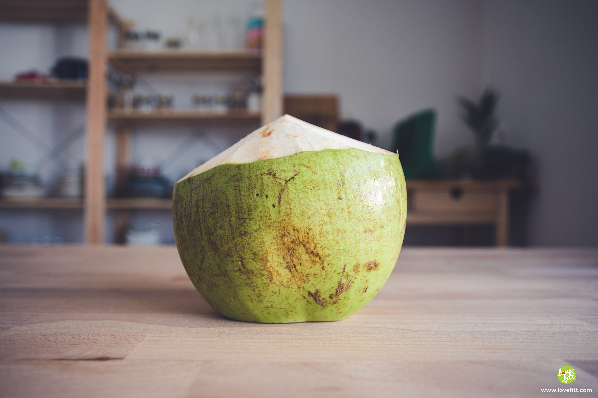
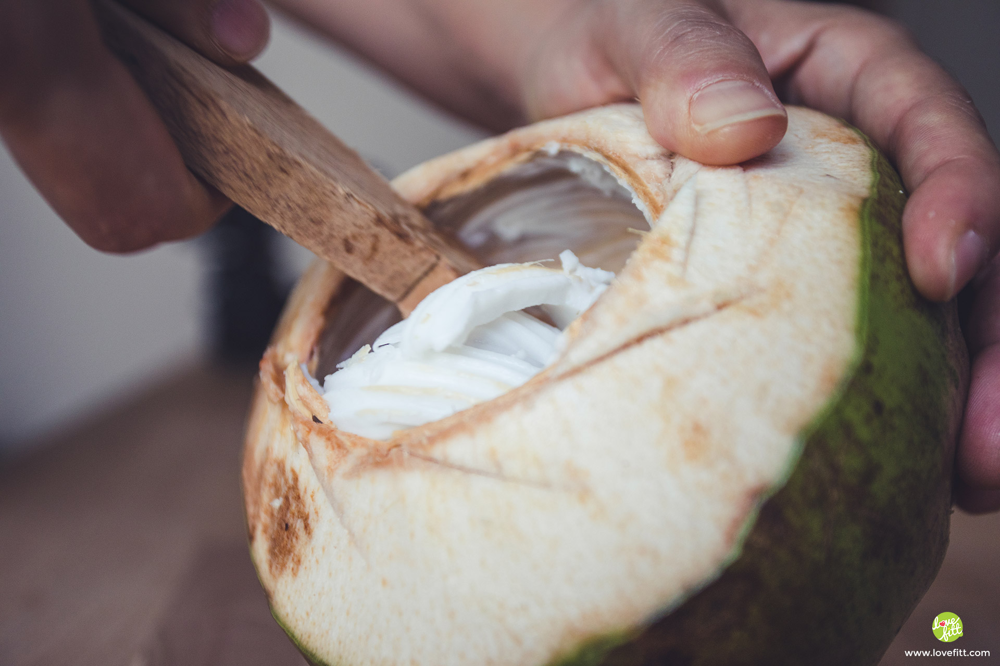

มะพร้าวอ่อน หอมๆ มันๆ ที่หลายคนติดใจ เอามาทำเป็นเครื่องดื่ม นมมะพร้าว แล้วอร่อย ชื่นใจ แถมได้ประโยชน์ จากแร่ธาตุ วิตามมินที่มีในเนื้อ และ น้ำมะพร้าวไปแบบเต็มๆ
ช่วงนี้มะพร้าวอ่อนเริ่มลงราคาแล้ว สามารถหาซื้อได้ในราคาลูกละ 20-25 บาท (ในกรุงเทพฯ) ด้วยที่ประโยชน์ของมะพร้าวนั้นไม่ธรรมดาเลย มีทั้งแร่ธาตุ และวิตามินที่มีประโยชน์ต่อร่างกายมากมาย ยิ่งเป็นมะพร้าวน้ำหอมอ่อนๆ ดื่มแล้วสดชื่นแก้กระหายได้ดี
น้ำมะพร้าวขึ้นชื่อในเรื่องของการฟื้นฟูกำลังให้กับร่างกาย สามารถใช้เป็นเครื่องดื่มเพิ่มพลังงานงาน และความสดชื่นหลังออกกำลังกายได้เสมือน Energy Drink ดีๆ เลยทีเดียว เนื่องจากน้ำตาลที่อยู่ในน้ำมะพร้าวนั้น ร่างกายสามารถดูซึมไปใช้ทดแทนพลังงานที่สูญเสียไปได้อย่างรวดเร็ว
หลายคนหลีกเลี่ยงที่จะกินเนื้อมะพร้าว เพราะเกรงว่าจะมีไขมันอิ่มตัวสูง แต่ความจริงแล้ว ไขมันในเนื้อมะพร้าวต่างจากไขมันอิ่มตัวที่ได้จากแหล่งอื่น เพราะเป็นไขมันอิ่มตัวสายโซ่ขนาดกลาง ที่ร่างกายสามารถนำมาใช้เป็นพลังงานได้อย่างรวดเร็ว ไม่เหลือเก็บเป็นไขมันสะสม หรือไขมันในเลือดอย่างที่หลายคนเข้าใจกัน
ในน้ำมะพร้าว และเนื้อมะพร้าวอ่อน มีโพแทสเซียม และโซเดี่ยม (โพแทสเซียม 285 มิลิกรัม และ โซเดี่ยม 16 มิลิกรัม ) ซึ่งโพแทสเซียม และโซเดี่ยมที่สมดุลนี้ช่วยรักษาระดับความดันเลือดอยู่ในระดับที่ดี เนื้อมะพร้าวก็มีวิตามิน B และโฟเลต ที่ช่วยในการเผาผลาญโปรตีน และ มีความสำคัญต่อการสร้างเม็ดเลือดแดงอีกด้วย
มะพร้าวอาจเป็นผลไม้ที่มีประโยชน์ แต่ก็ให้พลังงานค่อนข้างสูง เพราะพลังงานที่มีอยู่ในมะพร้าว จะมาจากไขมัน และน้ำตาล ดังนั้นถ้าอยู่ในช่วงควบคุมน้ำหนัก ก็ควรจำกัดปริมาณการกินให้เหมาะสม หรือจัดช่วงเวลาในการกินให้เป็นช่วงหลังการออกกำลังกายจะดีที่สุด เพื่อเป็นการฟื้นฟูร่างกาย ชดเชยพลังงานที่เสียไปนั่นเอง
เครื่องดื่มที่ทำง่ายๆ ดื่มอร่อย หอมมัน ได้ประโยชน์จากทั้งเนื้อ และน้ำมะพร้าว ซึ่งความจริงเมนูนี้ก็คล้ายๆ กับน้ำมะพร้าวปั่น เพียงแต่ใส่น้ำแข็งให้น้อยลง เพิ่มส่วนของเนื้อมะพร้าวอ่อนลงไป ลดการเติมน้ำเชื่อม และ นมข้นจืด เปลื่ยนมาใช้เป็นน้ำตาลหญ้าหวาน และนมสดพร่องมันเนยแทน สำหรับใครที่ช่วงนี้ถือศีลกินเจก็สามารถตัดส่วนของนมสดพร่องมันเนยออกได้
นำส่วนผสมทั้งหมดใส่ลงในโถ่ปั่น ตามด้วยน้ำแข็ง ปั่นที่ความเร็วสูงสุด เป็นเวลา 1 นาที เมื่อละเอียดเข้ากันดีก็ปิดเครื่อง แล้วแบ่งเสิร์ฟได้เลย พลังงานของนมมะพร้าวอ่อนตามสูตร อยู่ที่ 325 kcal พลังงานต่อแก้วจะอยู่ที่ประมาณ 163 kcal
มหาวิทยาลัยขอนแก่น
Khon kaen University
เบอร์โทรศัพท์
043-009700
ที่อยู่
123 หมู่ 16 ถ.มิตรภาพ ต.ในเมือง อ.เมือง จ.ขอนแก่น 40002